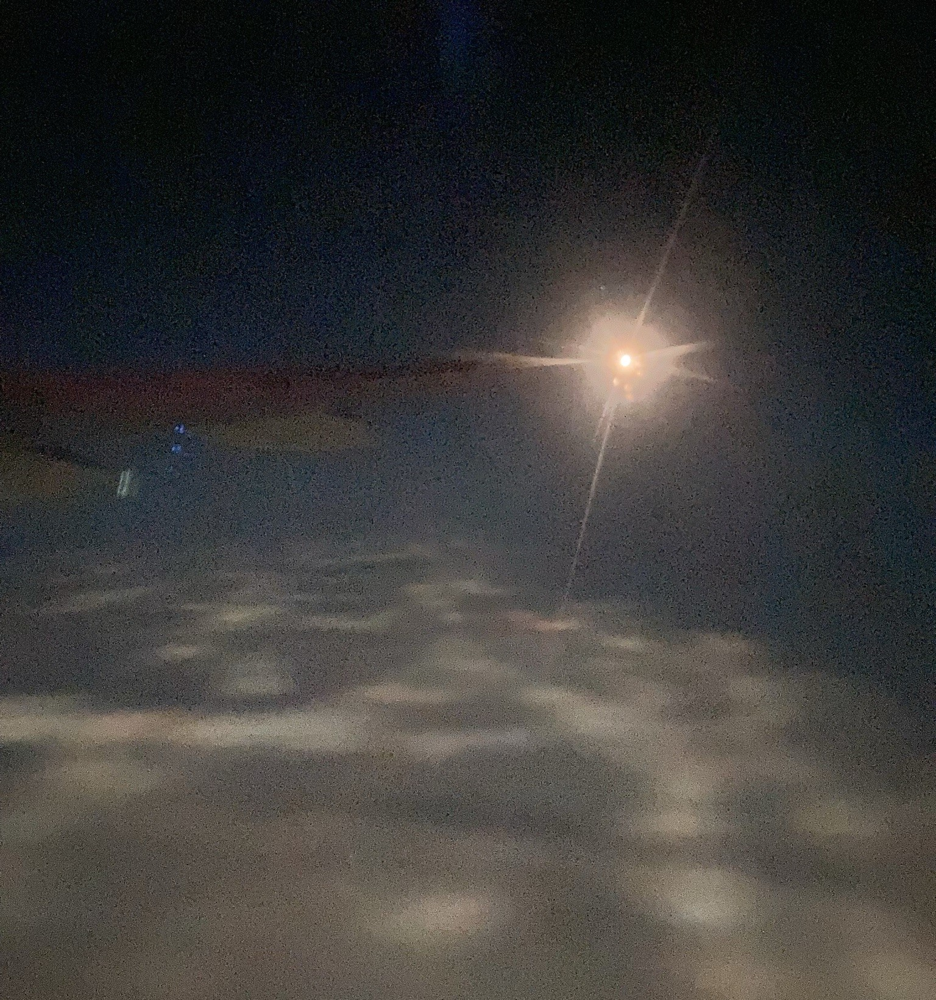

Sydney Spann, originally from Baltimore, MD, is a sound artist and musician based in New York. They work with synthesis, electronics, and voice to intervene within a personal archive of field recordings, culminating in studio compositions and improvised live performances. Their music lately engages the private experiences that shape domestic and public spaces, and the affective dynamics within childcare work. They have released albums with She Rocks! (NYC), and Reading Group (NYC), with a full-length release forthcoming on Recital and a collaborative release forthcoming with Kiera Mulhern. They have performed at the High Zero Festival of Experimental Free Improvised Music, Bar Laika by e-flux, Performance Space New York, Center for Performance Research, Cafe OTO (London), KM28 (Berlin), and in clubs and galleries throughout the US. Recent commissioned works include Attached/Detached (partial disappearance) for ISSUE Project Room’s With Womens Work Series, and original music for artist Nile Koetting’s installation Downtime Salon at Musik Installationen in Nuremberg. They were a 2022 Artist in Residence at ISSUE Project Room and are an MFA candidate in Music/Sound at Bard College.